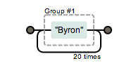
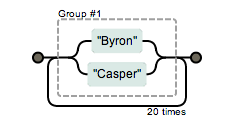

1.1 正则字面量的方式创建 var re = /abc/g
1.2 构造函数的形式创建 var re = new RegExp("abc","g")
正则构造函数创建接收2个参数, 格式都为字符串, 第一个表示要匹配的字符串模式;
注意，第一个参数中的转义字符要用双反斜杠’\\’,原因是第一个参数是字符串不是正则表达式。
第二个表示可选的标志字符串
var re1 = /\[ab\]c/g;
//在全局匹配"[ab]c"这个字符,方括号需要转义
var re2 = new RegExp("\\[ab\\]c","g")
//与第一个含义一样,但是字符串中的"\"也需要转义
检索字符串中的指定值,返回被找到的值,如果没有发现匹配,则返回null.
exec是英语execute的意思，CEO首席执行官，E就是executive执行的 “执行” 把正则式放到字符串上执行 每次执行结果按序输出，不管结果有几个，一次只输出一个
语法:
reg.exec(待测字符);
exec哲学，就是match的反面，match能把所有结果在数组中输出 exec是将所有结果通过while()迭代输出
它用来检测该字符串（参数）是否匹配我们的正则规则。检索字符串中的指定值,返回true或者flase;
语法:
正则式.test(待检测字符); → 返回true/false
用来寻找字符串在父字符串中的位置, 可以传递字符串,也可以传递正则
语法:
父字符串.search(子字符/或正则); 返回符合条件的子字符的第一个位置
哲学： search就是能用正则式的indexOf。
在父字符串中寻找匹配字符串，它是一个字符串方法，参数是配置字符串或者匹配的规则。
语法:
父字符串.match(子串/或正则); 返回父字符串中所有匹配的子串,正则中有"/g"时返回的是一个数组;
match 也可以用分组捕获
利用match来寻找连续相同子串
正则中没有"/g"时返回的是一个类数组对象,此时效果与exec()完全一样.
替换父字符串中匹配的子串
replace的哲学，就能能动态替换
语法:
stringObject.replace(regexp/substr,replacement)
stringObject: 父字符串;
regexp/substr: 必须,将被替换的字符,可以用正则来匹配;
replacement: 必须要,一个字符串值,规定了替换文本或生成替换文本的函数。
返回值:该方法返回一个新的字符串,是用 replacement 替换了 regexp 的第一次匹配或所有匹配之后得到的。
注意:
字符串 stringObject 的 replace() 方法执行的是查找并替换的操作。它将在 stringObject 中查找与 regexp 相匹配的子字符串，然后用 replacement 来替换这些子串。如果 regexp 具有全局标志 g，那么 replace() 方法将替换所有匹配的子串。否则，它只替换第一个匹配子串。
replacement 可以是字符串，也可以是函数。如果它是字符串，那么每个匹配都将由字符串替换。但是 replacement 中的 $ 字符具有特定的含义,它说明从模式匹配得到的字符串将用于替换。
strObj.replace(str[regExp] , replacement)
2.2.3.1 最常用的是传入2个字符串,这种方法有一个缺陷,只能匹配替换一次
第一个参数可以传入正则,来实现多次匹配
以下是第二个参数为字符串时的情况
切割字符串转为数组的方法，我们通常传递字符或者字符串来切割字符串，此时我们通常传递的参数是能看到的摸得着，是比较具体的， 当我们不能用一个完整的字符串表达这个切个符号的时候，但是我们能提炼换一个规则来切割，此时我们就可以用正则表达式来表示这个规则，切割字符串。
语法:
字符串.split(分割字符/或正则); 返回一个数组
正则表达式由普通字符和特殊字符(元字符)组成.
普通字符包括:字母,数字,_等
特殊字符:( ) [ ] { } ^ *? \ | + 这些在正则中有特定的含义.
普通字符可以直接用,要匹配特殊字符需要转义.
| 字符 | 转义字符 | 含义 |
|---|---|---|
| \t | /\t/ | 制表符 |
| \n | /\n/ | 回车符 |
| \f | /\f/ | 换页符 |
| \b | /\b/ | 回退字符 |
Javascript的正则表达式中有四类字符集
通过首尾字母与"-"组成的一个范围集合
如: [a-z] 表示小写字母集合.
[A-Z] 表示大写字母集合.
[0-9] 表示数字集合.
通过在"[ ]"内部最前面添加"^"来表示选择不包含该集合的字符集
如:
[^0-9] 表示除数字以为的其他所有字符.
[^abc] 表示不包括abc的其他字符集合.
通过"[ ]" 将几个集合拼接在一起表示一个组合的集合.
如: [a-zA-Z0-9]表示大小写字母以及数字的集合.
字符串是有边界的,即字符串的首尾.
"^" 表示字符串的起始位置;
"$" 表示字符串的结束位置;
"\b" 表示单词的分界;
"\B" 表示非单词分隔符.
正则中提供了几个常用的预定义类来匹配常见的字符
| . | [^\n\r] | 除了换行和回车之外的任意字符 |
| \d | [0-9] | 数字字符 |
| \D | [^0-9] | 非数字字符 |
| \s | [ \t\n\x0B\f\r] | 空白字符 |
| \S | [^ \t\n\x0B\f\r] | 非空白字符 |
| \w | [a-zA-Z_0-9] | 单词字符(所有的字母) |
| \W | [^a-zA-Z_0-9] | 非单词字符 |
表示字符或集合出现次数的特殊字符
一般用大括号{ 数字 } 表示重复的次数.
| ? | 软性量词 | 出现零次或一次 |
| * | 软性量词 | 出现零次或多次(任意次) |
| + | 软性量词 | 出现一次或多次（至少一次） |
| {n} | 硬性量词 | 对应零次或者n次 |
| {n,m} | 软性量词 | 至少出现n次但不超过m次(中间不能有空格) |
| {n,} | 软性量词 | 至少出现n次(+的升级版) |
g 表示全局匹配
i 忽略大小写
m 多行匹配
[\u4e00-\u9fa5]表示中文集
| 表示或者的意思
有时候我们希望使用量词的时候匹配多个字符，而不是像上面例子只是匹配一个，比如希望匹配Byron出现20次的字符串，我们如果写成 Byron{20} 的话匹配的是Byro＋n出现20次，怎么把Byron作为一个整体呢？使用()就可以达到次目的，我们称为分组.

如果希望匹配Byron或Casper出现20次该怎么办呢？可以使用字符 ｜ 达到或的功效 (Byron|Casper){20}
